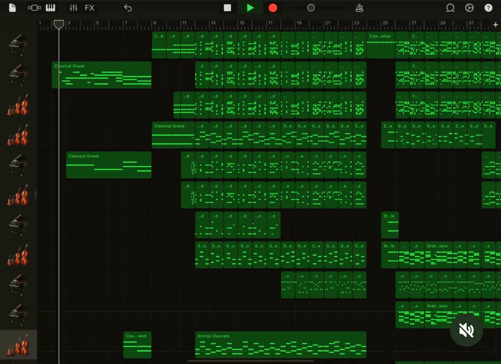
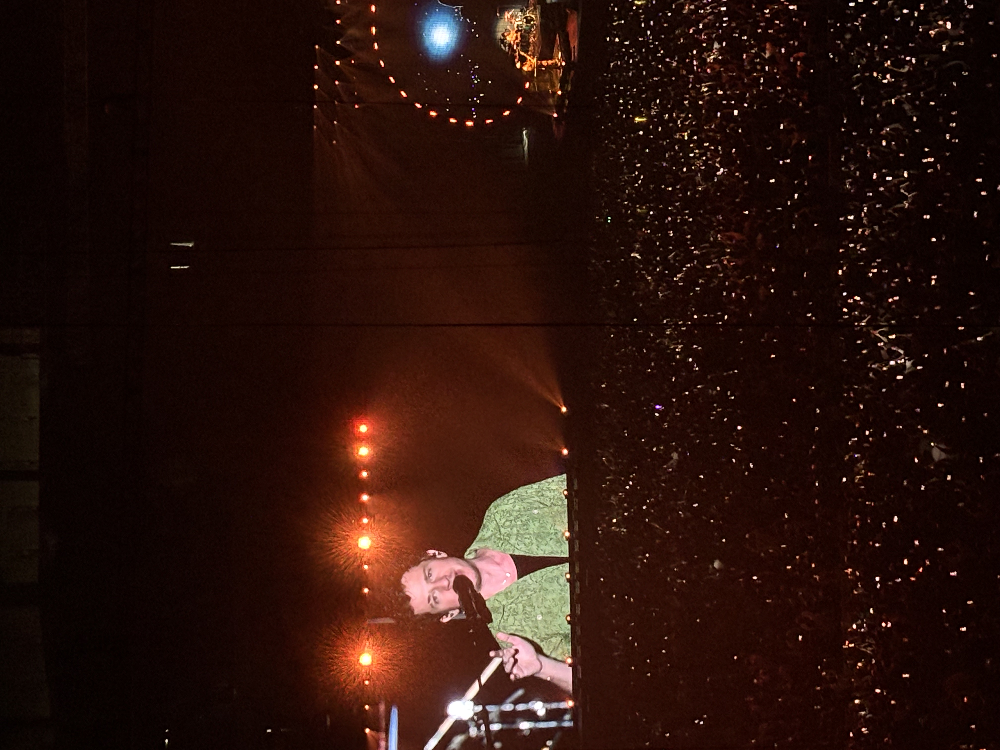
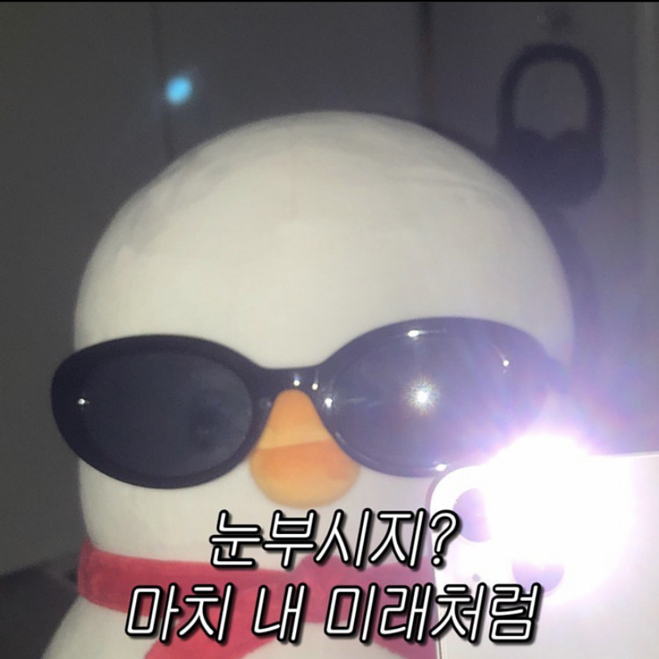
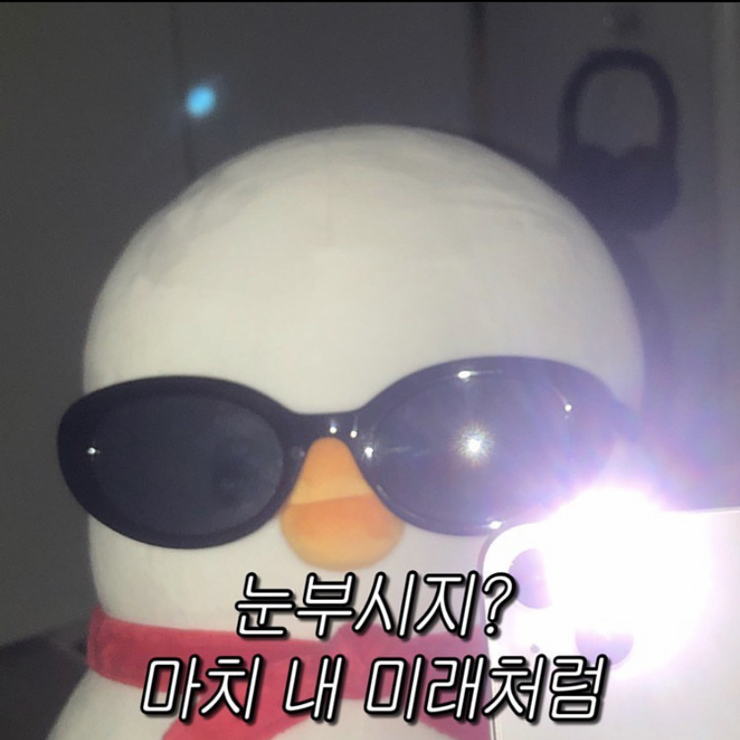
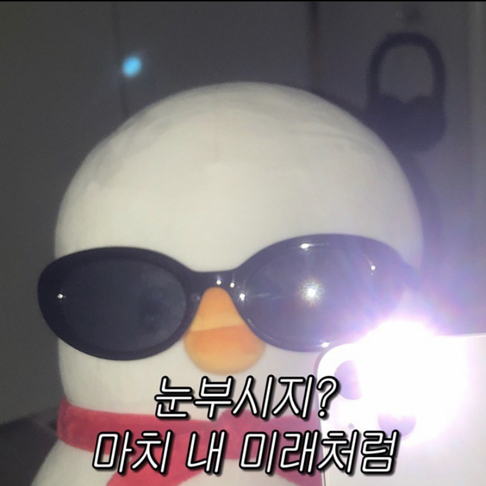
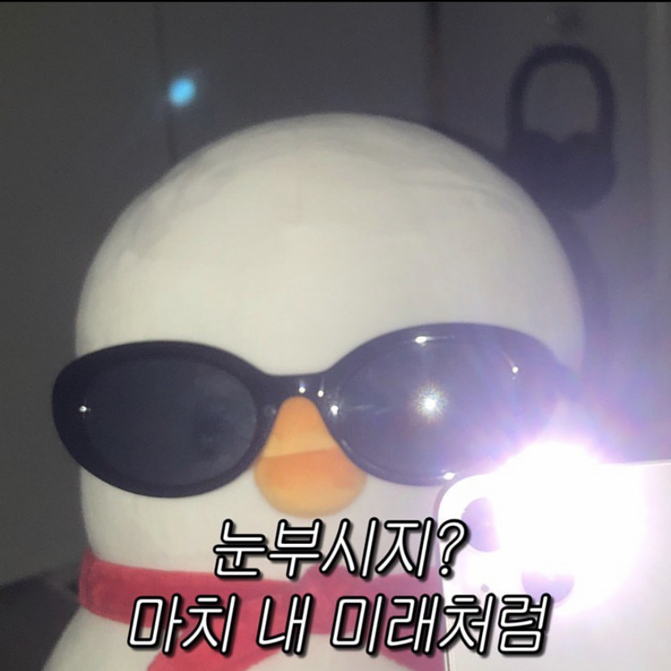

내가 좋아하는 것들


 


안녕하세요 빌리에요~~ 저는 신소재공학과+전기전자공학을 공부하다가, 갑자기 웹의 매력에 빠져버렸어요. 그 후에는 제 모든 과거를 정리하고 개발공부에 뛰어들었어요. 벌써 1년 반이 넘어가네요.. 요즘 저는 어떤 개발자가 되어야하는지에 대해 알아가는 시간을 보내고 있어요. 우테코에서 너무 좋은 동료들을 얻어서 너무 행복해요. 개발 이외의 시간에는 취미생활을 하는데요, 저는 음악을 좋아해서 기타도 치고 가라지밴드로 이것저것 만들면서 놀아요. 혼자 꼼지락거리는게 개발이랑 잘 맞았던 것 같기도 해요.


인터스텔라는 예술작품 그 자체에요. 웜홀과 블랙홀과 같은 복잡한 과학적 개념을 시각적으로 구현해냈고, 제가 좋아하는 음악 감독 한스 짐머가 참여했어요. 그리고 감독은 이 영화를 위해 대학교에 다시 들어갔다고 해요. 블랙홀 장면에서 수많은 사람들의 노력이 느껴져서 소름이 돋았던 기억이 나요.
제 인생 드라마는 미스터 션샤인이에요. 이 작품은 단순한 시대극을 넘어, 문학적인 대사와 깊이 있는 서사를 통해 감정을 강렬하게 전달하는 드라마라고 생각합니다. 특히, 대본이 예술적입니다. 단순한 대사가 아니라, 한 문장 한 문장이 마치 한 편의 시처럼 아름답게 다듬어져 있어, 듣는 순간 가슴을 울립니다. 저는 원래 문학을 그다지 좋아하지 않았는데, 이 드라마를 통해 언어가 이렇게나 깊고 아름답게 사용될 수 있다는 것에 감탄했습니다.
유난한 도전은 토스 팀의 창업과 성장 과정을 담은 책이에요. 저는 책을 정말 가끔 읽는데요, 개발을 거의 처음 시작했을 때 이 책을 읽고 가슴이 뜨거워졌던 기억이 나요. 제 도전 정신에 큰 영향을 준 책이에요.